互联网通信协议业界标准
TCP/IP 入门
计算机网络协议
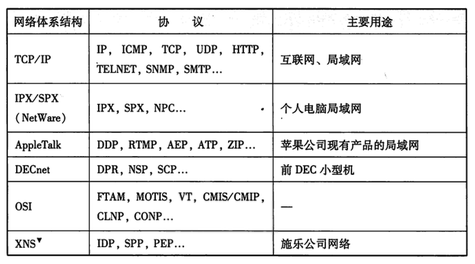为什么需要一个标准协议
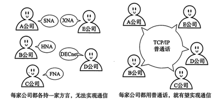协议就是各种计算机设备之间进行网络通信时事先达成的一种“协定”，使得不同厂商的设备、不同的 CPU、不同的操作系统组成的计算机之间，只要遵循相同的协议就能够实现通信
OSI 协议分层模型
OSI 是 ISO(International Organization for Standards) 对通信系统制定了一个国际标准，没有普及，但其协议分层模型成为了网络协议制定的参考模型
协议分层
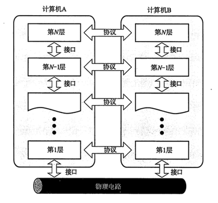分层的优势
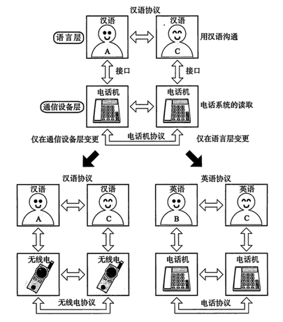一个简单的计算机网络设备组成
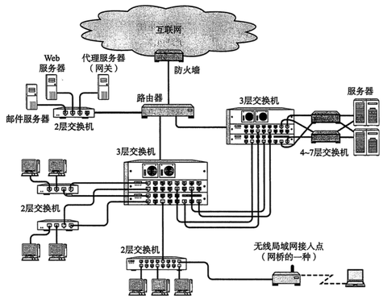网络设备对应的分层
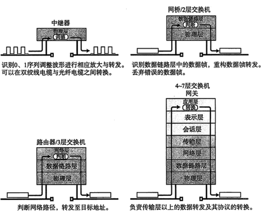TCP/IP 通信协议群
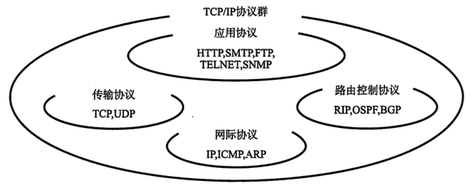TCP/IP 的诞生
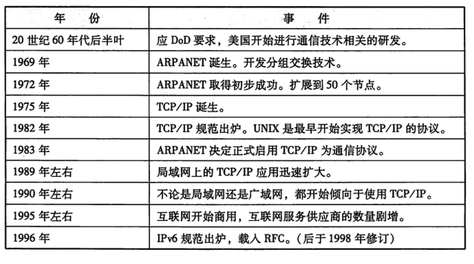TCP/IP 由 IETF(The Internet Engineering Task Force) 讨论定制，各种协议标准化之后会列入 RFC(Request For Comment) 文档并公布
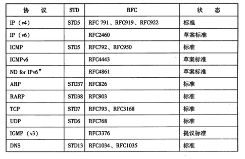TCP/IP 协议分层模型
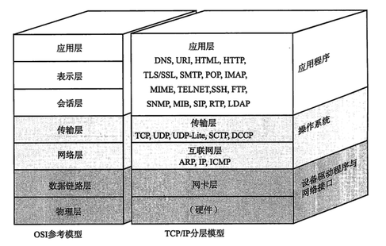TCP/IP 协议分层数据包示意
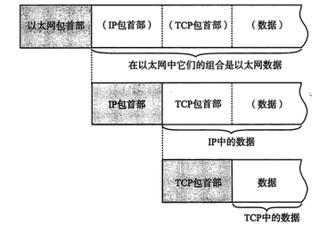TCP/IP 协议分层数据包结构
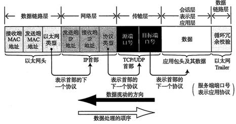互联网基础名词
“互联网”，Internet，是指由 ARPANET 发展而来、互连全世界的计算机网络
无数异构网络互连组成巨型网络
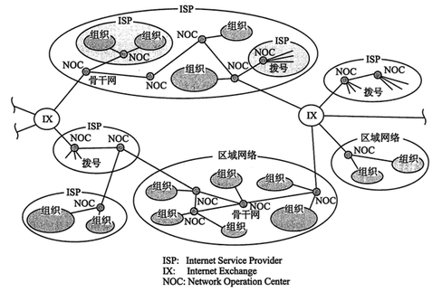内网与外网
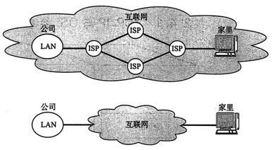面向有连接型和面向无连接型
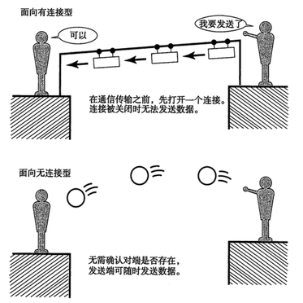电路交换和分组交换
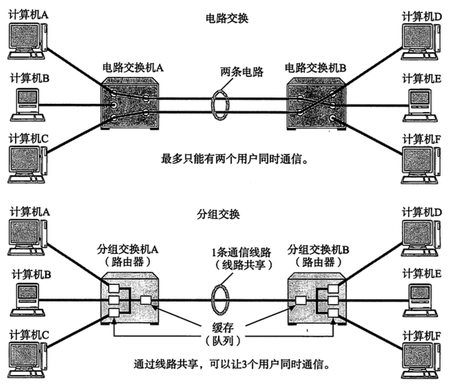单播、广播、多播、任播
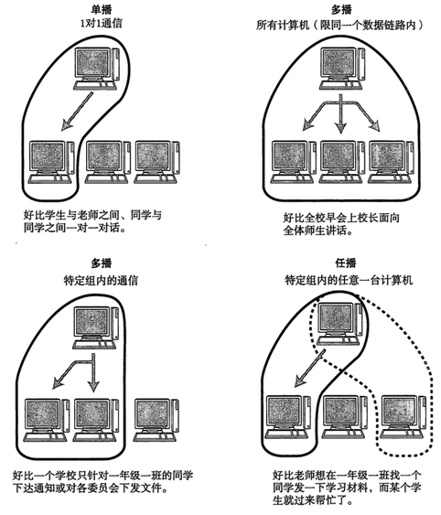MAC 地址，唯一性
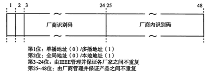MAC(48位) 60:03:08:9f:46:f8
用于数据链路层的节点识别，根据 IEEE802.3 规范，有线、无线 LAN、蓝牙等设备均使用 MAC，烧入硬件
IP 地址，唯一性，层次性
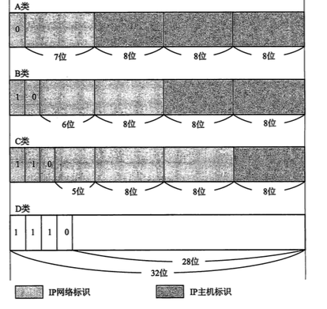IPv4(32位) 127.0.0.1
IPv6(128位)
IP 地址用于识别主机和路由，由 IPv4(32)、IPv6(128) 定义
数据链路层(Data Link)
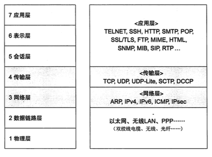TCP/IP 对于数据链路层和物理层未做定义，是以这两层功能实现为前提
数据链路层是对物理层的抽象，解决各种网络结构内计算设备之间的数据通信，通过 MAC 地址识别目标
共享介质之CSMA(载波监听多路访问)，争夺数据传输权，易冲突，易拥堵
共享介质之改良的 CSMA/CD，先检查再发送数据
共享介质之令牌传递，获得令牌才能发送数据
独享介质传输

虚拟局域网 VLAN
数据链路之以太网(Ethernet)
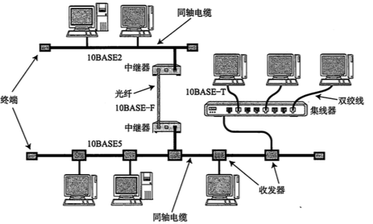 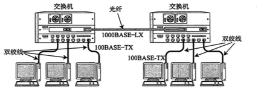以太网帧前导码(Preamble)
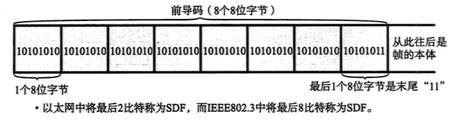前导码末尾叫做 SFD(Start Frame Delimiter)
以太网帧本体
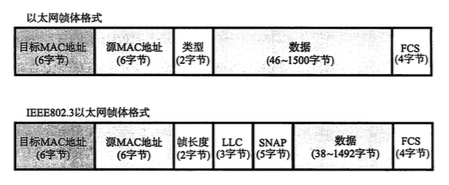FCS(Frame Check Sequence) 用于校验数据
MTU(Maximum Transmission Unit) 最大传输单元
以太网帧主要数据类型
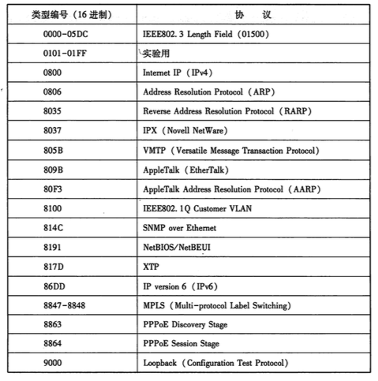带有 VLAN 标记的以太网帧
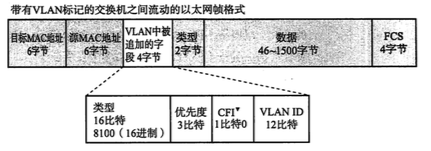IEEE802.3 LLC/SNAP 细分
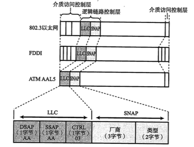无线通信
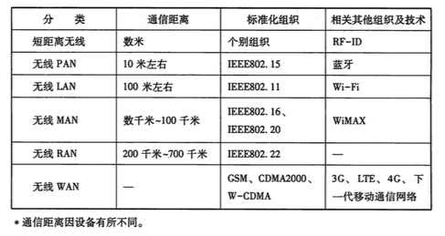介质访问控制使用 CSAM/CD 类似的 CSAM/CA
PPP(Point to Point Protocol) 通信
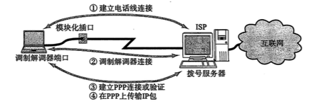 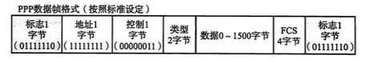不涉及 MAC 寻址，但有用户验证
PPPoE(PPP over Ethernet) 通信
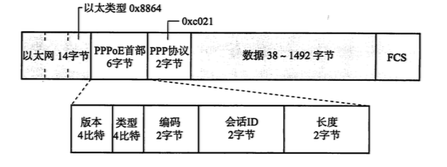其他常用数据链路
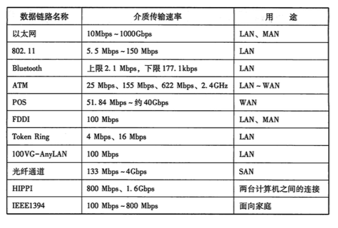公用网络的数据链路之 ADSL
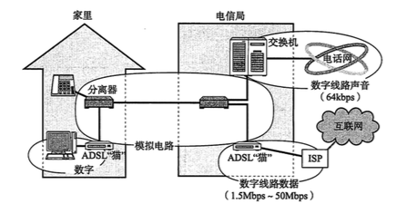虚拟专用网络 VPN
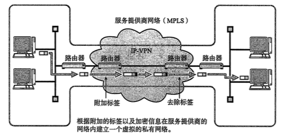网络层(Network)
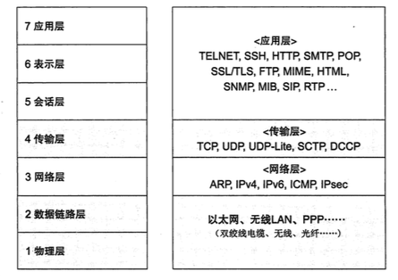网际协议 IP(Internet Protocal)
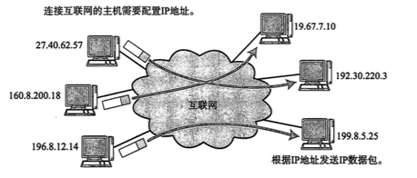路由控制 Routing
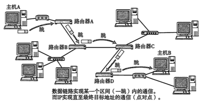- IP 层是对数据链路层的抽象，它能跨越以太网、无线 LAN、PPP 等不同的数据链路层，将数据传送到目的地
- 由于不同数据链路层的 MTU 不同，IP 数据包传输过程有分片和重组（IP Fragmentation）
- IP 属于面向无连接型的传输，简化实现，高速传输，但不能保证数据送达（TCP 层的任务）
IP 地址分层：主机标志和网络标志
IP 地址的网络标志与路由控制
IPv4 数据包
IPv6 数据包
IPv6 扩展首部
IP 协议相关技术
仅凭 IP 协议无法完成通信，还有一系列辅助技术，包括 DNS、ARP、ICMP、DHCP、NAT等，另外还有 IP隧道、IP多播、IP任播、质量控制(QoS)、Mobile IP等
DNS(Domain Name System)
DNS 相当于互联网的分布式数据库
ARP(Address Resolution Protocal)
以目标 IP 地址为线索，来定位下一个应该接收数据包的网络设备的 MAC 地址，如果目标不在同一个链路，ARP 查找的是下一跳路由器的 MAC 地址。ARP 只适用于 IPv4，IPv6 用 ICMPv6 的邻居探索代替
ICMP(Internet Control Message Protocol)
用于在 IP 主机、路由器之间传递控制消息。控制消息是指网络通不通、主机是否可达、路由是否可用等网络本身的消息。这些控制消息虽然并不传输用户数据，但是对于用户数据的传递起着重要的作用。

ICMP 应用示例
ICMP 消息类型
TTL、ICMP 超时消息与 traceroute
ICMP 回送消息与 ping
DHCP(Dynamic Host Configuration Protocol)
- 给内部网络或网络服务供应商自动分配IP地址
- 给用户或者内部网络管理员作为对所有计算机作中央管理的手段
NAT(Network Address Translation)
NAT不仅能解决 IP 地址不足的问题，而且还能够有效地避免来自网络外部的攻击，隐藏并保护网络内部的计算机。
传输层(Transport)
- 传输层解决应用程序之间的通信
- 通常采用“源 IP 地址”，“目标 IP 地址”，“协议号”，“源端口”，“目标端口”来识别一个通信进程
UDP(User Datagram Protocal)
- 面向无连接通信，随时发送数据
- 按照原始数据装包发送，不分割数据
- 没有复杂的控制机制
简单高效的通信，适用于
- 包总量较少的通信(DNS、SNMP)
- 音视频多媒体流等及时通信
- 广播通信等
UDP 首部格式
TCP(Transmission Control Protocol)
- 面向有连接通信，先建立连接再发送数据
- 通过复杂的控制，确保数据按顺序到达，无重复
通过序列号和确认应答提高可靠性
对未应答的处理
根据网络环境的变化动态计算超时时间，一般为 0.5 秒整数倍，如果达到一定重发次数任然失败则判定为网络异常，强行关闭连接
一个完整的 TCP 连接生命周期
TCP 以段为单位发送数据，分割数据，自动调整最大消息长度 MSS(Maximum Segment Size)
TCP 利用多窗口发送提高速度
TCP 滑动窗口控制
TCP 窗口控制和重发
TCP 窗口控制和重发
TCP 窗口控制实现流量控制